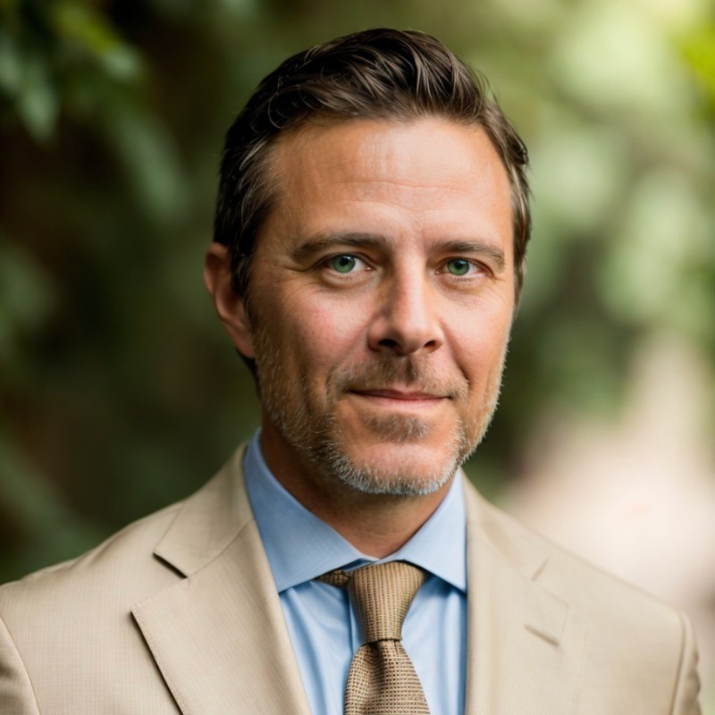

Founder & CEO, Hyperclear Consulting
The firm is led by Owen Murphy, a 25-year marketing veteran whose career began in public relations agencies, building thought leadership programs, media outreach, and crisis planning for clients. That grounding in messaging that drives action still shapes the practice today.
Often engaged as a fractional CMO, Owen is brought in when leadership suspects competitors are pulling ahead or when a marketing department has stalled — bringing an outside assessment of the martech stack, personnel, and channel mix, followed by a specific plan across paid and organic social, email, content, and AI-informed marketing automation. His approach draws on experience building and leading marketing departments at organizations ranging from early-stage startups to $400M-revenue, high-growth companies.
Crisis readiness runs through all of it: the plans, message frameworks, media training, and spokesperson preparation get built in advance, well ahead of day one of an actual crisis — the same instinct for control and message discipline rooted in Owen's PR agency background. Whether the mandate is stalled growth, underperforming campaigns, or a live reputational threat, engagements come without the red tape of a permanent seat.
Engagements don't stop at strategy. Depending on the size and scope of the work, Owen brings in a vetted team spanning graphic design, content and collateral development, and full-scale brand development — so a fractional engagement can flex from a single strategic workstream up to a complete company rebrand, without the client needing to source and manage separate vendors.